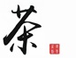

|  | Tea Culture · Home | Tea Culture · Origin | Tea Culture · Tea Art |
| Tea Culture · Origin China is the hometown of tea and the birthplace of tea culture. The discovery and use of Chinese tea has a history of four to five thousand years, and it has been prosperous and spread all over the world. Tea is the national drink of the Chinese nation. It was born in Shennong, heard by Lu Zhougong, flourished in the Tang Dynasty, flourished in the Song Dynasty, and popularized in the Ming and Qing Dynasties. Chinese tea culture is a unique combination of Buddhism, Confucianism, and Taoism. It is a wonderful flower in Chinese culture! China's tea areas are vast, and the tea areas are divided into three levels, namely, first-class tea areas (shown in the southwest and south of the Yangtze River), second-class tea areas (in Northwest and Jiangbei), and third-class tea areas (represented by South China) . At the same time, tea has become the world's most popular, most popular, and most beneficial green beverage for physical and mental health. Tea integrates the world and the people, and advocates that "the world is a family." The connotation of tea culture is actually a concrete manifestation of the connotation of Chinese culture and Chinese culture. China is known as the country of etiquette. The spiritual connotation of tea culture is formed by combining the habits of making tea, enjoying tea, smelling tea, drinking tea, and tasting tea with the Chinese cultural connotation and etiquette. It has distinctive Chinese cultural characteristics. A kind of cultural phenomenon, can also be said to be a kind of etiquette phenomenon. In ancient China, rituals were used to determine relatives and detachments, to resolve suspicions, and to distinguish between the same and the difference, to clarify right and wrong. In the long-term historical development, rituals, as the ethics and life norms of Chinese society, have played an important role in the cultivation of Chinese spiritual quality. At the same time, with the transformation and development of society, rituals have been continuously given new content, and Chinese The fusion of some habits and forms in life has formed various cultural phenomena with Chinese characteristics. Tea culture is a representative traditional culture in China. China is not only one of the origins of tea, but there are still rich and diverse tea drinking habits and customs in different ethnic groups and regions in China. Growing tea and drinking tea does not mean that there is a tea culture. It is only a prerequisite for the formation of tea culture. It must also have the participation of literati and cultural connotation. The "Tea Jing" written by Lu Yu in the Tang Dynasty systematically summarized the experience of tea production and drinking in the Tang Dynasty and before the Tang Dynasty, and proposed the spirit of the tea ceremony of fine practice and frugality. A group of cultural people such as Lu Yu and Jiao Ran attach great importance to the spiritual enjoyment and ethics of tea. They pay attention to tea drinking utensils, tea drinking water and the art of making tea, and blend with Confucianism, Taoism, and Buddhism philosophy, and gradually bring people into their Spiritual realm. In the process of drinking tea by some scholar-officials and literati and elegant scholars, they also created many tea poems. Only in "The Poems of the Tang Dynasty", there are more than 400 poems by more than 100 poets, which laid the foundation of Chinese tea culture. Tea is a kind of plant, it is edible, detoxification, long-term health, and longevity. Tea is the best product and can also be used for medicine. Therefore, there is a saying that tea is the essence of heaven and earth, and Shun is the foundation of life. Therefore, there is tea in Taoist family as tea. |
| Tea culture |